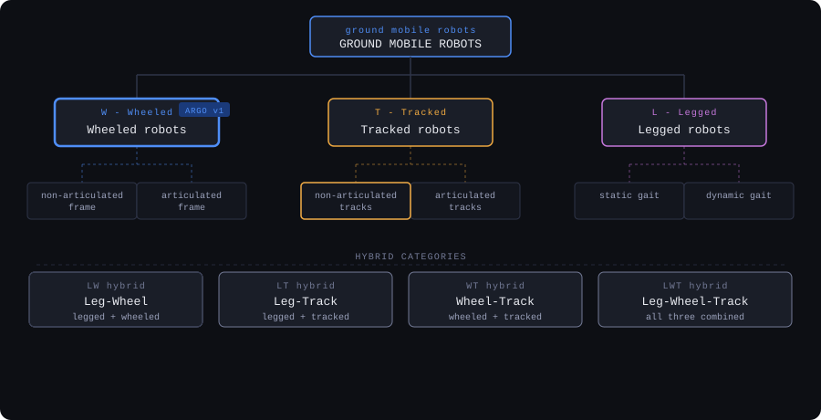
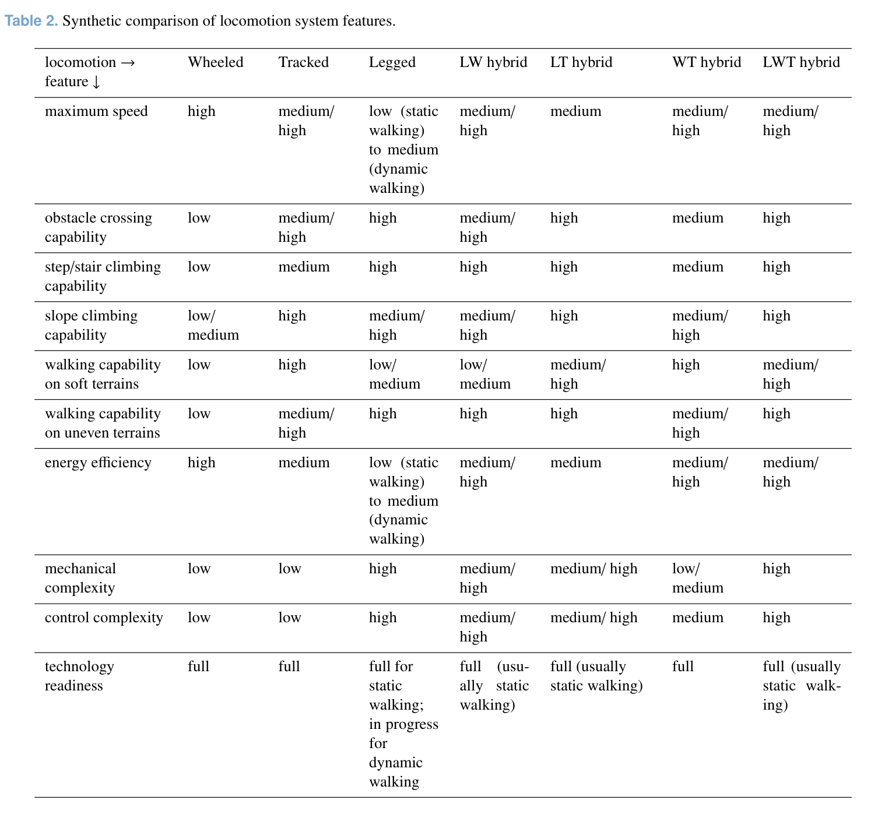
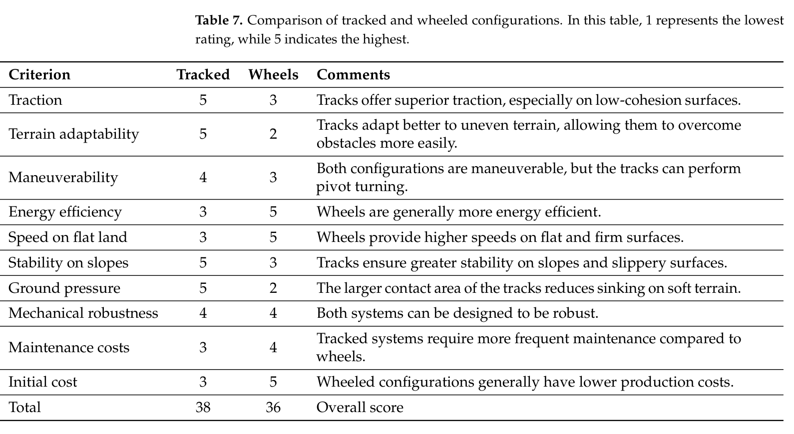

The choice of locomotion system is arguably the single most consequential decision in an outdoor mobile robot design. It determines the mechanical architecture, the motor and actuator count, the firmware complexity, the energy consumption, and ultimately the kind of terrain the robot can realistically operate in. Getting it right at the concept phase avoids painful redesigns later.
The academic literature on this topic is extensive. Bruzzone and Quaglia (2012) published a rigorous taxonomy and comparison of ground mobile robot locomotion systems covering both research prototypes and commercial products [1]. Their framework is the starting point for the analysis below, adapted to the specific constraints of this build.
// the design space
Locomotion systems for ground robots can be grouped into three fundamental categories - wheeled (W), tracked (T), and legged (L) - plus four hybrid combinations of those. Each category has a characteristic profile of strengths and weaknesses across mobility, efficiency, and complexity.

Wheeled robots
High speed, high energy efficiency, simple mechanics. Limited obstacle crossing without articulated frames. The most common solution in structured and semi-structured environments. Includes differential, Ackermann, and skid-steering variants.
Tracked robots
Large ground contact area gives good traction on soft and uneven terrain. Differential steering only. Medium energy efficiency due to track friction. More mechanically complex than wheeled but very well proven in field applications.
Legged robots
Maximum mobility in unstructured environments and step/stair climbing. High mechanical and control complexity. Low energy efficiency (especially static gait). Technology readiness lower than W and T for solo builders.
Leg-wheel
Combines wheeled speed with legged obstacle capability. Complex actuation, but it's the candidate for the next upgrade.
Leg-track
Articulated tracks provide extended mobility over obstacles. Used in field robots.
Wheel-track
Variable-geometry tracks or wheel-track switching. Versatile but mechanically complex. High build effort.
Leg-wheel-track
Maximum versatility. Very high complexity. Research-level platforms only. Not realistic for a first build.

// criteria for this build
The taxonomy above is domain-agnostic. To make a decision, it needs to be filtered through the specific requirements of this project. The mission - an outdoor rover operating on uneven terrain (grass, gravel, light mud) - already eliminates several options. The additional constraints narrow it further:
Build feasibility: the platform must be buildable by one person using FDM-printed structural parts and off-the-shelf electronics. Mechanical systems requiring precise machining, complex linkages, or non-standard actuators are not compatible with this constraint.
Budget: the budget is deliberately tight. This forces prioritisation and prevents the project from expanding into component territory that would require a commercial sponsor.
Outdoor terrain performance: the rover must maintain traction and directional stability on grass and loose gravel. This is not extreme terrain - no step climbing, no soft mud, no slopes above 20 degrees - but it is not a flat indoor floor either.
Control complexity: for v1, the firmware layer must stay manageable for a single developer who is learning as the project progresses. Every additional degree of freedom in the locomotion system adds complexity to the control layer.
Field fault tolerance: the rover will be tested outdoors, away from a workbench. A locomotion system that degrades gracefully on a single actuator failure is strongly preferred over one that stops completely.

// pugh matrix
The Pugh matrix below compares five locomotion concepts against a baseline - the 4WD skid-steering wheeled configuration selected for Argo v1. Scores are relative: + means better than baseline on that criterion, S means similar, - means worse, -- significantly worse. Weights follow directly from the criteria above. The resulting weight distribution is consistent with the independent comparison in La Regina et al. [3], Table 7, which scores tracked and wheeled platforms on the same terrain type.
| Criterion weight | 2WD differential |
4WD skid-steer BASELINE - ARGO v1 |
Tracked (non-articulated) |
Ackermann (car-like) |
Quadruped (legged) |
|---|---|---|---|---|---|
| Build feasibility 2 | + | D | + | - | -- |
| Component cost 2 | + | D | - | - | -- |
| Uneven terrain traction 3 | - | D | + | - | + |
| Soft ground capability 3 | - | D | + | - | S |
| Max speed 1 | S | D | - | + | -- |
| Energy efficiency 1 | + | D | - | + | -- |
| Control complexity 2 | + | D | S | - | -- |
| Tech readiness / community 1 | + | D | + | + | - |
| Field fault tolerance 2 | - | D | S | - | S |
| Weighted net score | 0 | 0 | +5 | -11 | -14 |
// reading the results
2WD differential scores equal to the baseline at 0. This is not a mistake. Two motors, two drivers, simpler firmware, lower cost - on the criteria that favour simplicity, 2WD is clearly better. For anyone building a first rover for indoor or controlled use, it is a valid choice. The equal score here reflects a real tradeoff between build simplicity and outdoor capability.
The decision in favour of 4WD skid-steer comes from two criteria. First, terrain traction and soft ground (both weight 3): with four wheels independently driven, ground contact is maintained even when one wheel lifts off a bump or loses grip on wet grass; with two driven wheels and a passive castor, that same bump can cause loss of heading. Second, field fault tolerance: a 4WD platform that loses one motor can still move and steer; a 2WD that loses a driven wheel becomes uncontrollable. The extra motors are not for speed or torque - they are for stability in the field.
Tracked configuration scores above the baseline (+5) and is, on paper, the strongest option for this mission. Literature on non-articulated tracked robots confirms why: TGMRs-NA (tracked ground mobile robots, non-articulated) are characterised by extreme mechanical simplicity - two motors, differential steering, no suspension linkage - making them among the least complex locomotion architectures to realise [2]. Traction on soft terrain and obstacle-crossing capability are real advantages, rooted in the Bekker terramechanics model: a longer contact patch distributes ground pressure, and the continuous belt maintains grip where individual wheels would lose contact.
The decision against tracks is not about the drivetrain - it is about the track itself. Designing a functional FDM-printed belt or link-chain track involves non-trivial mechanical decisions: belt tension and idler geometry, debris clearing clearances, and joint wear under cyclic load. These are solvable problems, but they represent a significant design effort that sits outside the core scope of this build phase. An additional constraint is turning performance: at the dimensional scale of Argo v1, skid-steering a tracked platform requires enough torque margin to overcome static friction on both tracks simultaneously during a pivot turn. Wheeled skid-steer avoids this entirely - each wheel has an independent contact patch and can be reversed individually without the same friction penalty. For a v1 platform optimising for time-to-outdoor-test, tracks are the right answer for a v2.
Ackermann steering was considered briefly and dismissed quickly. Car-like steering requires a mechanical steering mechanism - a servo-driven front axle, kingpins, tie rods - all of which require precision and add failure modes. Beyond the mechanical complexity, the control strategy itself is more demanding: Ackermann requires coordinated steering angle and wheel speed inputs, while skid-steer "is more straightforward, as it only requires wheel speed control" [3]. For a rover that needs to turn in place or navigate tight spaces, the zero-radius turning capability of skid-steer is more useful than the energy efficiency advantage of Ackermann at high speed. This is not a race car.
Legged locomotion scores -14 and the gap is not surprising. A quadruped capable of stable outdoor locomotion requires actuated joints with position and torque feedback, a gait planning algorithm, and structural members that can handle impact loads with every footfall. The control problem alone - static gait planning, ground contact estimation, posture correction - would double or triple the firmware scope. For a v1 platform where the goal is to get something working and tested outdoors, legged locomotion is not a rational choice. It is a future platform, not a starting point.
The Pugh matrix is a structured opinion, not a proof. The scores reflect judgement calls on relative importance, and a different weighting would produce a different ranking. What the matrix does well is make those judgement calls explicit: instead of an intuitive "I'll go with wheels", there is a documented set of criteria, weights, and relative scores that can be challenged, revised, or reused for a different mission.
In this case, the matrix gives the highest score to tracked, but the selected configuration is 4WD wheeled. The difference between score and decision is useful: it shows exactly which constraint (FDM track design complexity) outweighs the terrain advantage, and it identifies tracked as the logical choice for a v2 build.
// references
- Bruzzone, L. & Quaglia, G. (2012). Review article: locomotion systems for ground mobile robots in unstructured environments. Mechanical Sciences, 3, 49-62. doi:10.5194/ms-3-49-2012
- Bruzzone, L.; Nodehi, S.E.; Fanghella, P. (2022). Tracked locomotion systems for ground mobile robots: a review. Machines, 10, 648. doi:10.3390/machines10080648
- La Regina, R.; Genel, Ö.E.; Pappalardo, C.M.; Guida, D. (2025). A comprehensive review of theoretical advances, practical developments, and modern challenges of autonomous unmanned ground vehicles. Machines, 13, 1071. doi:10.3390/machines13121071